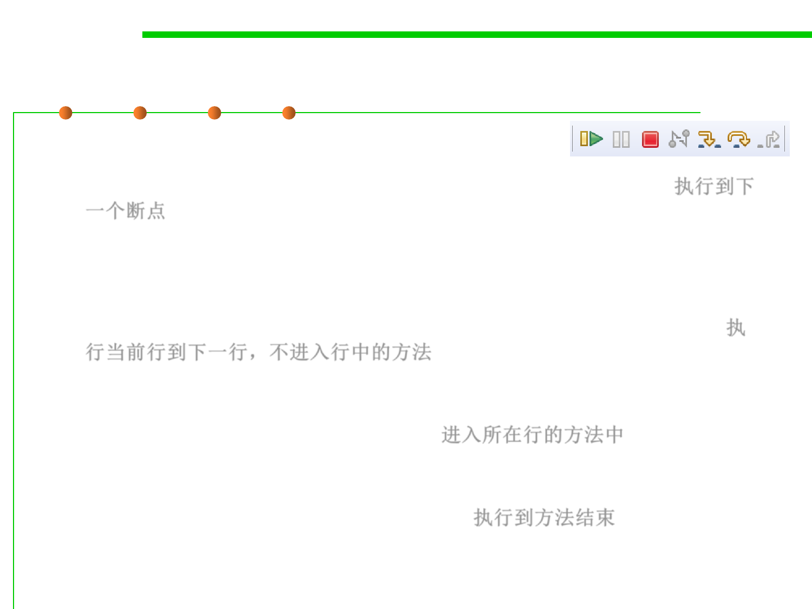

Debugger: breakpoint
7.4 Debugging
▪ Resuming Execution
– Resume the debugger will run to the next breakpoint and pause. 执行到下
一个断点
– Debugging step-by-step
– Step Over will just execute the line and go to the next one. If a method is
about to be invoked in this line, the debugger will not debug into the code
of that method, and execute that method completely as one entire step. 执
行当前行到下一行，不进入行中的方法
– Step Into will just execute the line and go to the next one. If a method is
about to be invoked in this line , the next step is to go into that method
and continue debugging step-by-step. 进入所在行的方法中
– Step Return If debugger is debugging a method step-by-step, “step
return” will let the debugger run the entire method(to the end of this
method) until it returns as one entire step. 执行到方法结束